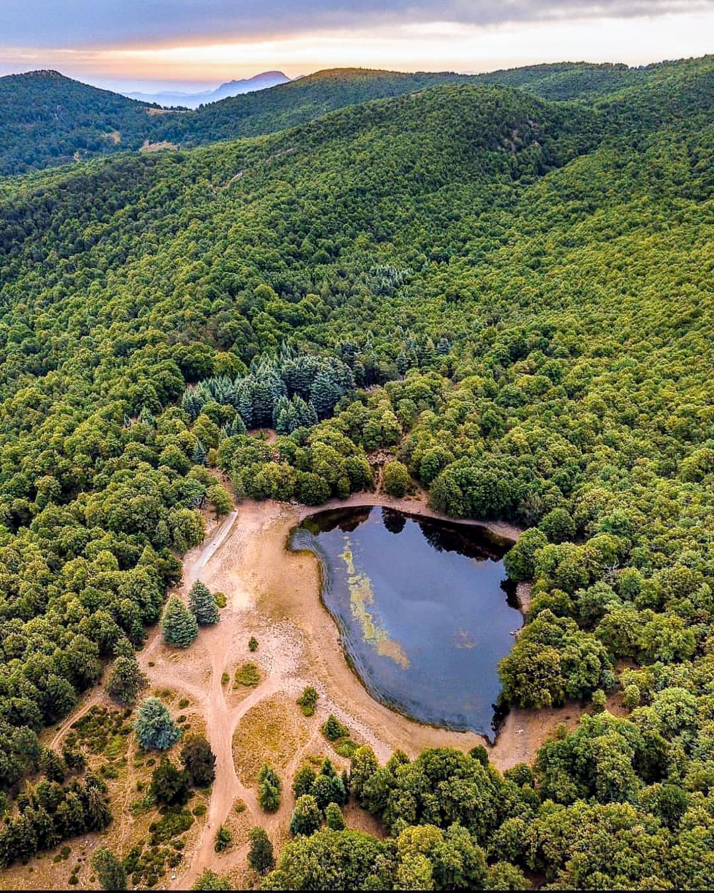
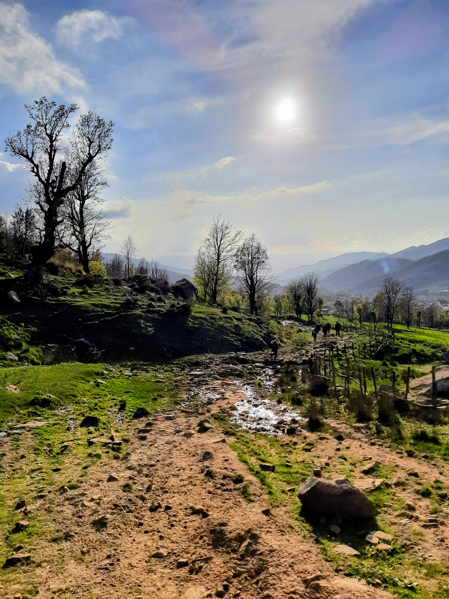
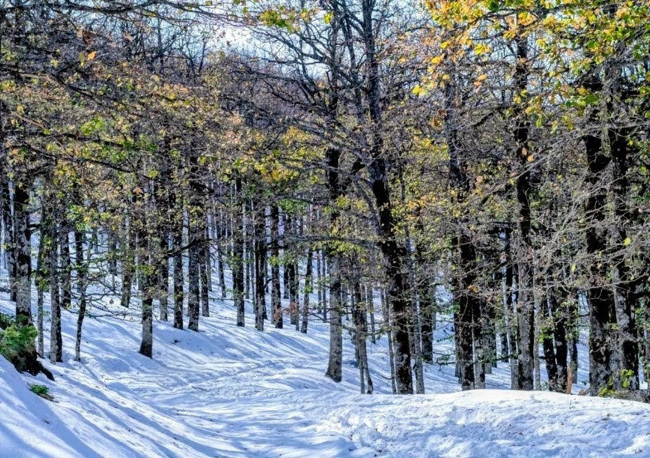

Activités
Randonnée
Une randonnée à Akfadou peut être une expérience enrichissante en pleine nature. Il existe plusieurs options, dont une randonnée vers le Lac Noir, un parcours paisible à travers la forêt, ou une ascension du plus haut sommet d'Akfadou.

Pique-nique
Un pique-nique à Akfadou, un lieu réputé pour sa nature sauvage et ses paysages, est une excellente idée.

Farniente
Le plaisir de ne faire absolument rien et profiter d'un climat méditerranéen et d'une eau cristaline.

Excursions
La forêt d'Akfadou est une destination idéale pour les excursions, offrant un mélange parfait de nature sauvage, de lacs paisibles et de sites historiques.
